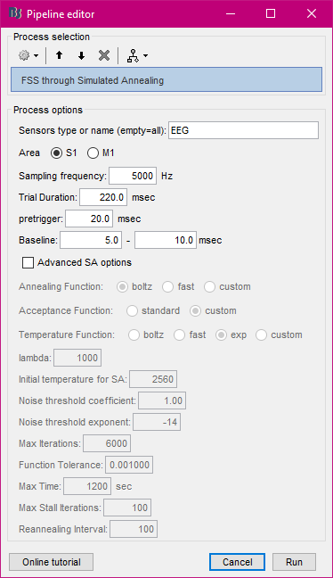

Options setting¶
Process GUI screenshot¶
Dataset dependant options:¶
Sensor types or names (empty=all): indicates which sensors are to be considered for elaboration.
Area: the brain area to be investigated.
Trial Duration : the length of a single trial, including the pretrigger.
pretrigger: the small amount of time considered before a trigger instant.
bas: indicates the two points within which the baseline is calculated. If both points are set to the same value, the process will consider the whole trial as the baseline.
Simulated Annealing options¶
Advanced SA options: if selected, it allows the user to change the successive Simulated Annealing parameters.
Annealing Function: the function used to perturbate the current configuration. Further info: see “Algorithm Settings”
Acceptance Function: the function used to accept or reject a new point in SA. Further info: see “Algorithm Settings”
Temperature Function: the function used to reduce temperature. Further info: see “Temperature Options”
lambda: a balancing parameter used in computing the Simulated Annealing objective function.
Initial temperature for SA: the starting value of the temperature for SA.
Noise threshold coefficient: used by the PCA whitening function, is the coefficient of the value (in scientific notation, coefficient x 10^exponent) under which the signals are considered as noise.
Noise threshold exponent: used by the PCA whitening function, is the exponent of the value (in scientific notation, coefficient x 10^exponent) under which the signals are considered as noise.
Function Tolerance: the first SA stopping criteria: the algorithm stops when the change in the best function value is smaller than this option.
Max Iterations: one more SA stopping criteria: the algorithm stops after this number of iterations.
Max Time: another SA stopping criteria: the algorithm stops after the indicated number of seconds.
Max Stall Iteration: the fourth SA stopping criteria.
Reannealing Interval: causes the algorithm to restart from a temperature comprised between the current temperature and the previous starting one to avoid the algorithm to get trapped into a local minimum.